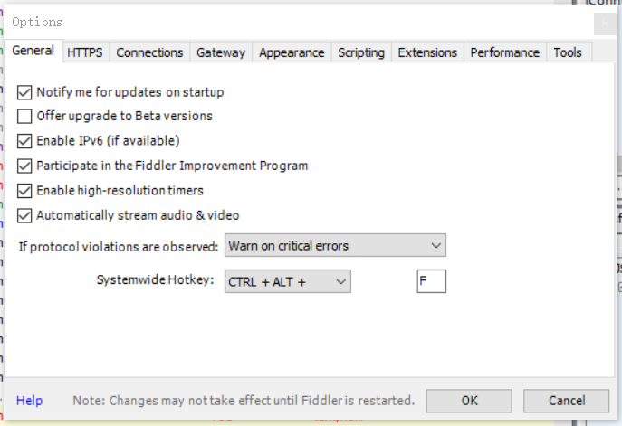
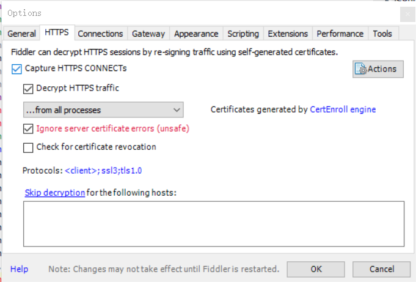
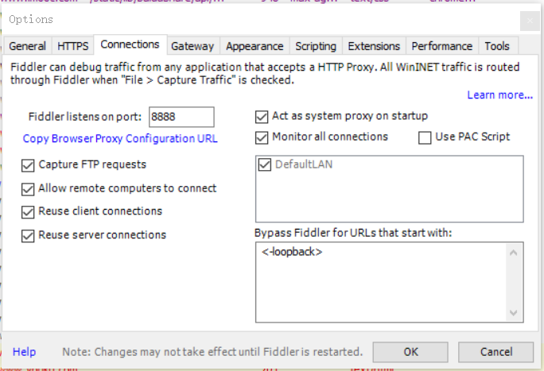

使用Fiddler抓取微信饿了么小程序数据
准备
- 一部装载Android 7.0以下的手机：此处使用华为荣耀5x
- 微信小程序7.0以下版本:此处为6.6.7。此处可通过豌豆荚应用下载。
- 安装好的Fiddler软件
- 良好的
wifi
步骤
将手机号电脑连接至同一
wifi配置Fiddler



手机wifi设置代理
（1）选择当前连接的wifi，进入修改wifi
（2）主机名为电脑的ip地址，通过
ipconfig可以查看到（3）端口为connections中设置的端口号

手机安装证书
（1）电脑打开Fiddler软件之后，使用手机访问
主机名:端口号,将进入fiddler证书下载页面，点击下载证书
（2）手机进入wifi高级设置，选择安装证书

（3）选择下载证书所在位置，选择用途为vpn和应用

- 打开微信小程序饿了么，即可抓取数据

Q-A
为什么要使用Android 7.0以下的手机和7.0以下的微信小程序版本？
参考 : 听说安卓微信 7.0 不能抓 https? · TesterHome
2019/09/14 10:19